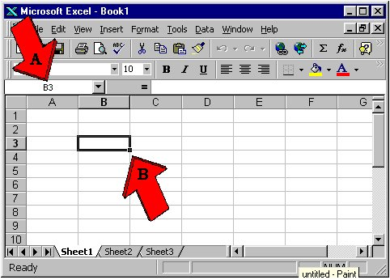
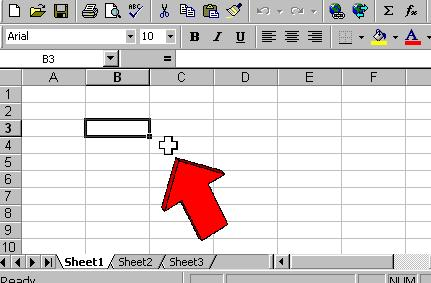
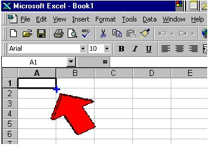
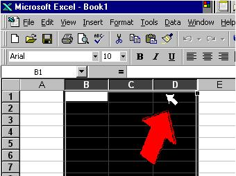
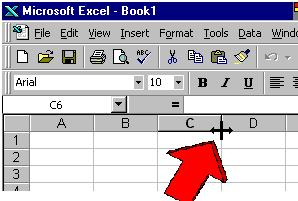

This page is hosted on AFS file server space, which is being shut down on November 13, 2018.
If you are seeing this message, your service provider needs to take steps now.
Visit
afs.unc.edu for more information.
-
The Excel grid - Cell addresses
When you first start up Excel,
here's how it looks. Across the top are letters, and down the side
are numbers.

Just like on a map, you refer
to each square, or cell, by its intersection of column and row.
B3 is the cell that's currently
active. You can tell because its address is shown on the upper left
corner (A) and the cell itself is outlined with a black border (B) which
has a little knob on the lower right corner.
-
Excel mouse shapes
Here are the four main mouse
shapes you'll see in Excel:
-
The Big Fat
White Plus Sign or BFWPS:

You can never
get into trouble with this symbol. Whenever you see it, you can select
a cell or a group of cells.
-
The Copy
Tool, or the thin cross:

When you see this, you'll copy
anything that's selected in whichever direction you drag. This can
be good or bad. Normally, you only copy formulas.
-
The Evil
Arrow:

This will actually move
whatever you have selected, sometimes directly on top of something else.
Don't use this most of the time.
-
The Column-
and Row-adjuster

You'll only see this when your
mouse is hovering in the gray, title, area of either a row or column.
It widens or narrows a column, or lengthens or shortens a row.